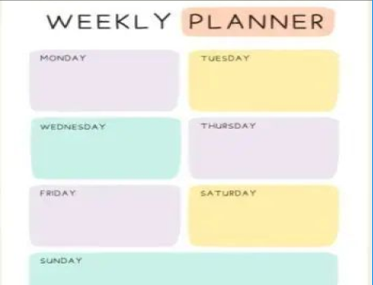
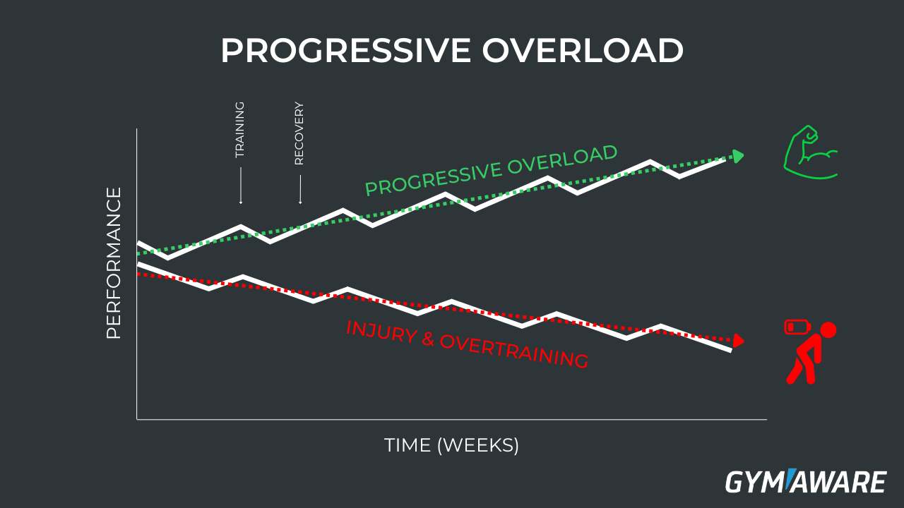
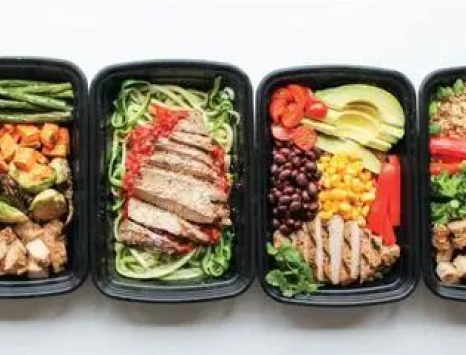
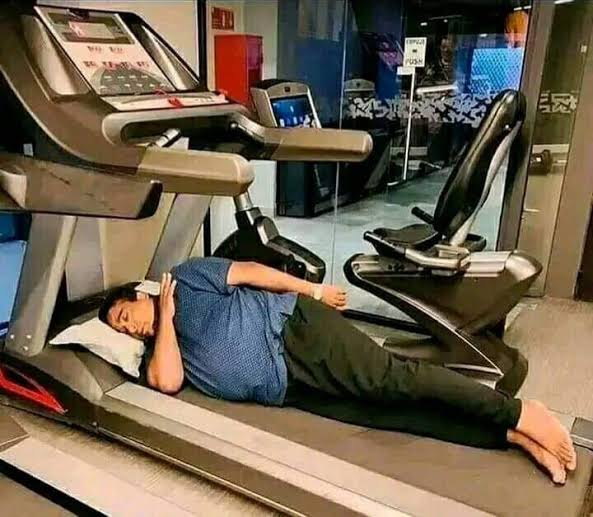

01
Kies structuur
Kies een workout split, zoals PPL of Upper/Lower, in plaats van te trainen wanneer je er zin in hebt. Bepaal ook een duidelijk doel: spieropbouw, sterker worden of vet verliezen. Zo past je trainingsplan bij wat je wilt bereiken.
Slim trainen
Als beginner zijn er veel kleine dingen die je kunt doen om je trainingen makkelijker en effectiever te maken. In dit onderdeel vind je handige tips die je kunt gebruiken tijdens en rondom het sporten. Zo haal je steeds wat meer uit je training en bouw je rustig je ervaring op.
01
Kies een workout split, zoals PPL of Upper/Lower, in plaats van te trainen wanneer je er zin in hebt. Bepaal ook een duidelijk doel: spieropbouw, sterker worden of vet verliezen. Zo past je trainingsplan bij wat je wilt bereiken.


02
Let tijdens je oefeningen vooral op je vorm. Een goede uitvoering is belangrijker dan zo veel mogelijk gewicht. Word geleidelijk sterker met progressive overload en houd je vooruitgang bij met foto's of een app.
03
Voeding speelt ook een belangrijke rol. Zorg voor voldoende koolhydraten voor energie rondom je training en eet na je training genoeg eiwitten en koolhydraten om je herstel te ondersteunen.


04
Tot slot is herstel net zo belangrijk als trainen. Probeer dagelijks 7 tot 9 uur te slapen en neem voldoende rustdagen. Zo geef je je lichaam de tijd om te herstellen en sterker te worden.